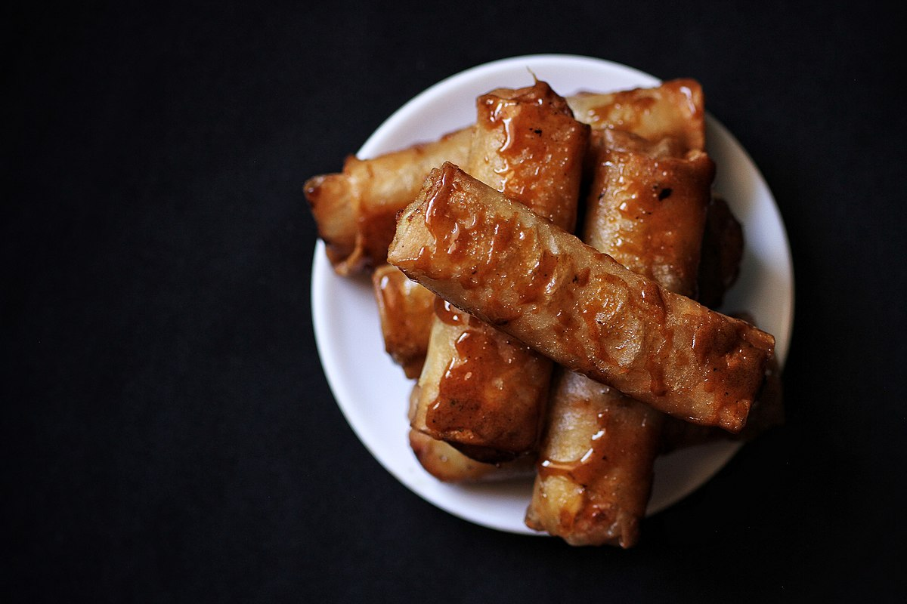

Halo-Halo
Leche flan is the silky-smooth superstar of Filipino desserts! It's like a sweet golden treasure made of creamy caramel and egg custard that melts in your mouth with every bite. Always the highlight of fiestas, birthdays, or even random Sundays, leche flan never fails to steal the spotlight. It's the dessert that makes you say, "Ang sarap, isa pa nga!" Whether it's served on its own or as the crown of your halo-halo, leche flan is the ultimate comfort food that feels like a warm hug from lola.

Ingredients:
- 6 saba bananas (ripe but firm), peeled and sliced lengthwise
- 1 cup jackfruit (langka), sliced into strips (optional)
- 1 cup brown sugar
- 12 lumpia wrappers (spring roll wrappers)
- Cooking oil, for frying
Recipe:
- Prepare the Bananas and Wrapper:
- Slice each saba banana in half lengthwise.
- Lay a lumpia wrapper on a flat surface and place a slice of banana near one corner.
- Quickly pour the caramel into llanera (flan molds) or a baking dish, tilting to coat the bottom evenly. Let it set.
- Add a strip of jackfruit (if using) and sprinkle about 1 teaspoon of brown sugar on top.
- Wrap the Turon:
- Fold the bottom corner of the wrapper over the filling.
- Roll it tightly while tucking in the sides, sealing the edge with water.
- Fry the Turon:
- Heat oil in a deep pan over medium heat.
- Place the wrapped turon in the hot oil, seam side down, and fry in batches.
- Sprinkle a little brown sugar into the oil while frying to create a caramel glaze.
- Cook Until Golden:
- Fry until the turon turns golden brown and the sugar creates a shiny coating.
- Transfer to a plate lined with paper towels to drain excess oil.
- Serve and Enjoy:
- Serve warm as a snack or dessert. Best paired with coffee or ice cream!
Turon is perfect for merienda or anytime you need a quick, crispy, sweet treat!